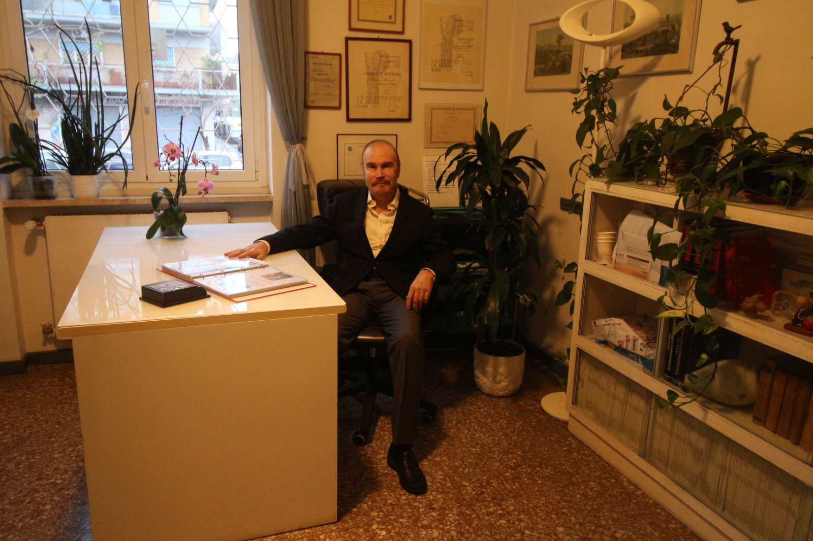

-Dal 2000 al 2015 è stato docente di Educazione sessuale ed Educazione Alimentare presso le scuole medie della Roma 3.
-Ha lavorato dal 1976 al 1981 per l ‘O.M.S.come ricercatore nell ‘ambito della prevenzione delle malattie cardiovascolari.
-Già responsabile della U.O. Vaccinazioni Internazionali di Ostia.
MEMBRO DI:
-Federazione Italiana di Medicina dello Sport.
-Società Italiana di igiene e medicina preventiva.
-Associazione Italiana di Medicina Estetica.
-Società Italiana di Medicina del Benessere.
-Società Italiana di Sessuologia Clinica ed Educazione Sessuale.
-Società Italiana di Nutrizione Umana.
-Corso di Perfezionamento in Igiene Mentale presso l’Unversità “La Sapienza”. -Corso di Biofeedback e terapie di autocontrollo (Università La Sapienza. -Corso di aggiornamento in Prevenzione e Diagnosi precoce dei tumori. -Corso di Medicina dello Sport Università La Sapienza. -Corso su “Salute respiratoria, Impariamo a respirare". -Specializzato in Igiene e Medicina Preventiva. -Laureato in Medicina e Chirurgia nel 1976 presso l’Università “La Sapienza“ con il massimo dei voti e la lode, con una tesi sul “Ruolo protettivo delle HDL sui fenomeni aterosclerotici“. -Registrato all'ordine dei medici: 23877.
1. Visita internistica
2. Esame dermatoscopico per nei e tumori cutanei
3. Esame della Capacita' Vitale dei polmoni (FEV1)
4. Esame Elettrocardiografico
5. Esame podoscopico
6. Check up alimentare
7. Dimostrazione di semplici esercizi fisici per mantenere le articolazioni in forma .
8. Rilascio di un programma preventivo individualizzato per il mantenimento di un buono stato di salute.